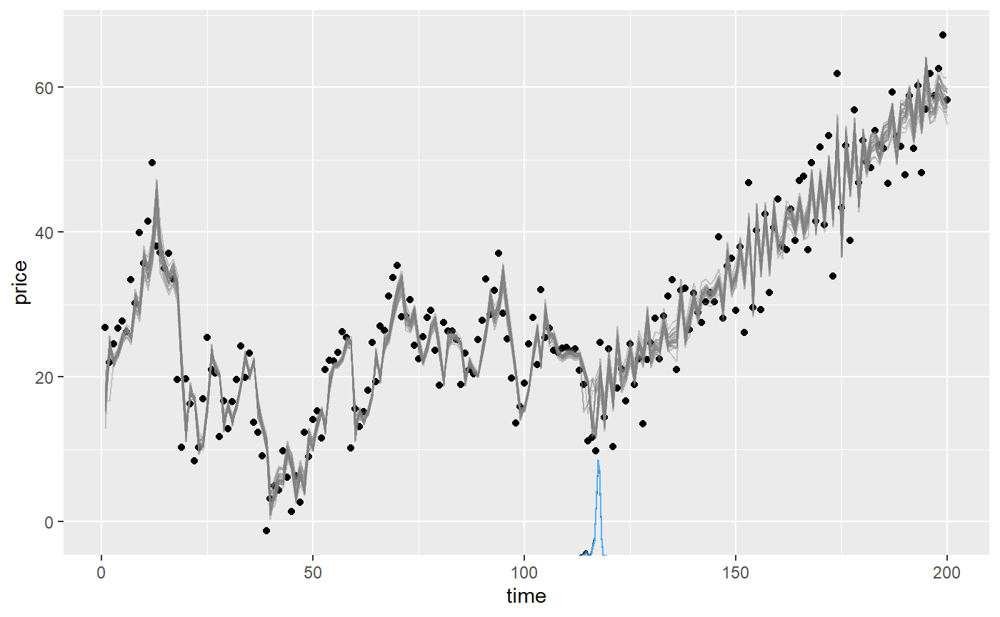
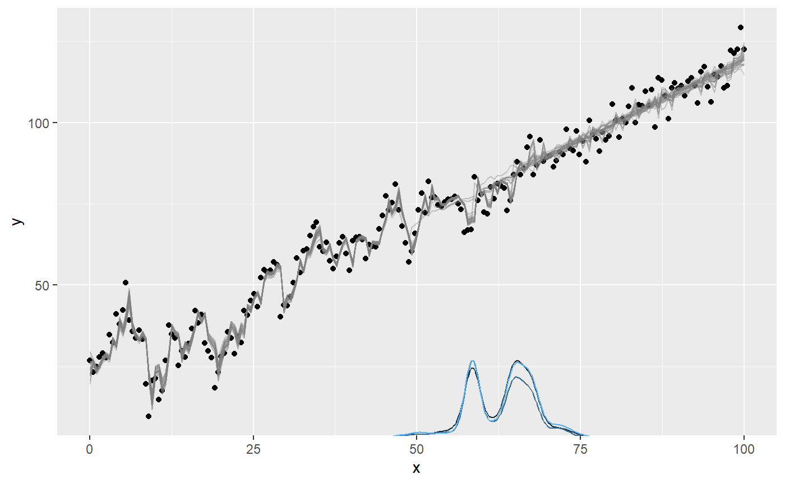
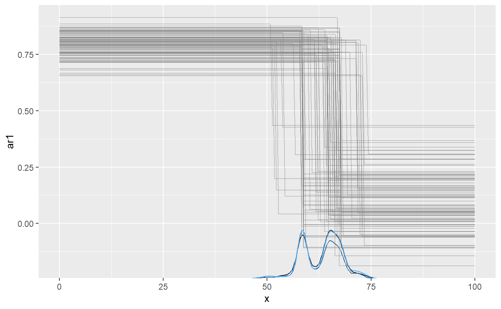
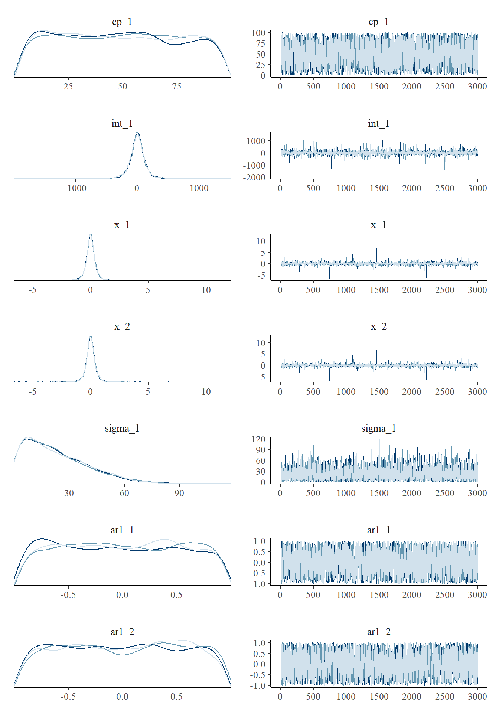

Autocorrelation is common in time series. You can specify N-order autoregressive models using ar(N) in the segment formulas. The most common use case is probably just to add ar(1) to the first segment. This will be “carried over” to later segments if nothing is done to change it - just like all other intercepts in mcp. You can do regression on the autocorrelation parameters using ar(N, formula) and it behaves much like sigma to model variance.
Simple example
Let’s try and model the simulated ex_ar dataset. Take at look at how it was simulated with mcp and scroll down to see another simulation.
We model this as a plateau (1) with a second-order autoregressive residual (ar(2)) followed by a joined slope (0 + time) with a negative first-order autoregressive residual (ar(1)):
model = list( price ~ 1 + ar(2), # int_1, ar1_1, ar2_1 ~ 0 + time + ar(1) # time_2, ar1_2 ) fit = mcp(model, ex_ar)
Let’s plot it and we see that AR was strong in the first segment and weaker-but-negative in the second:
plot(fit)

We can summarise the inferred coefficients:
summary(fit)
## Family: gaussian(link = 'identity')
## Iterations: 9000 from 3 chains.
## Segments:
## 1: price ~ 1 + ar(2)
## 2: price ~ 1 ~ 0 + time + ar(1)
##
## Population-level parameters:
## name match sim mean lower upper Rhat n.eff
## ar1_1 OK 0.7 0.74 0.587 0.89 1 907
## ar1_2 OK -0.4 -0.47 -0.685 -0.25 1 2316
## ar2_1 OK 0.2 0.15 0.007 0.29 1 936
## cp_1 120.0 117.24 114.044 118.84 1 339
## int_1 20.0 17.51 15.050 19.59 1 382
## sigma_1 OK 5.0 4.83 4.380 5.35 1 4869
## time_2 OK 0.5 0.52 0.482 0.55 1 773Note that he naming syntax for autoregressive intercepts is ar[order]_[segment]. For example, ar1_2 is the first-order autoregressive coefficient in segment 2. For slopes it will be ar[order]_[normal mcp name], e.g., ar1_x_3 for a slope on AR(1) in segment 3.
Comparing the columns mean and sim we see that the AR coefficients are reasonably recovered. In fact, the posterior mean is almost always exactly the same as arima(data, order = c(N, 0, 0)) (see below), so the non-perfect fits are due to randomness in the simulation - not in the fit.
Notice that sigma in AR models describe innovations, i.e., the part of the residuals that are not explained by the autoregressive coefficients. sd(ex_ar$price) is always higher. In this case, the SD of raw data in the plateau is 9.2. As always, it is good to assess posteriors and convergence more directly:
plot_pars(fit)

Sometimes, the trace plot shows that the change point (cp_1) is not well identified with this model and data. As discussed in the article on tips, tricks, and debugging, you could combine a more informative prior with more samples (mcp(..., adapt = 10000, iter = 10000)), if this is a problem.
You can do hypothesis testing (see hypothesis()) and model comparisons (see loo()) with autoregressive models, just as with any other model in mcp. Read more here or scroll down for an applied example.
Tips, comments, and warnings
The autoregressive modeling applies to the residuals from the predicted fit as is common. These residuals are computed on a transformed scale for families with a non-identity link function (e.g., poisson(link = "log")). In time-series jargon, this is a dynamical regression model where the the “normal” regression parameters make up the deterministic structure. See further comments in the section on priors below.
If you want to control the direction of the change, you simply put a positive-only prior the corresponding ar slope coefficient, e.g., ar_x_1 = "dnorm(0, 1) T(0, ). See recommendations in the section on priors for AR(N).
Regression on AR-coefficients
While the typical usage is AR(N), you can also specify how autocorrelation itself changes with \(x\) using ar(N, formula). If you want to model a steady change in the AR(1) “strength”, you can do ar(1, 1 + time). Please note that the link function for this regression formula is identity, so you can easily exceed the stationary boundary [-1, 1]. See the section on priors for AR(N) how to counter such problems. The regression on the AR coefficients is applied to all orders. Raise an issue on GitHub if you see a use case for per-order control.
You have the full suite of mcp formula syntax available inside ar so you could easily do ar(3, rel(1) + I(x^2) + exp(x)). Make sure to use a positive-only prior (e.g., "dunif(0, 1)" if using log() and sqrt() since they fail for negative values.
Combining ar() and sigma()
You can combine ar() with any regression model and with varying change points. Combining with sigma() will run will be valid if they change intercepts together so that each segment has homoskedastic residuals, i.e.,
I have not tested whether “uncoordinated” changes will yield correct estimates as well, i.e., with slopes on sigma()/ar() or for changes in sigma() without a corresponding change in ar(). There is a good chance that they will be accurate because ar()/sigma() are conditional on each other and they are modeled jointly for each x. But this is just a hunch that needs scrutinizing.
Order your data
Note that AR(N) as implemented in mcp (and most functions in R) applies to the order of the data in the data frame without taking into account the actual value of x. This has two important implications:
- You probably want to sort your data according to your
x. Just dodata = data[order(data$x), ]. - Adjacent data points that lie years apart are modeled to be just as (auto)correlated as adjacent points lying seconds apart.
Inferring an autocorrelation-only change
One “side-effect” of the mcp implementation of autocorrelation using ar() in the formulas is that you can infer when autocorrelation parameters and structures change.
Let’s simulate a change point in autocorrelation and see if we can infer it later:
# The model model = list( y ~ 1 + x + ar(1), # Slope ~ 0 + x + ar(1) # Slope and relative increase ) # Get predictions empty = mcp(model, sample = FALSE) set.seed(42) df = data.frame(x = seq(0, 100, length.out = 200)) df$y = empty$simulate( df$x, cp_1 = 60, int_1 = 20, x_1 = 1, x_2 = 1, # same slope ar1_1 = 0.8, ar1_2 = 0.2, sigma_1 = 5)
… and we use a prior to equate the slopes of each segment (read more about using priors to equate parameters and define constants). Now let’s see if we can recover these parameters. We use sample = "both" because we will do a Savage-Dickey test later.
prior = list(x_2 = "x_1") # Set the two slopes equal fit = mcp(model, data = df, prior = prior, sample = "both")
First, let’s get a visual to see that the posterior is reasonably narrow and consistent:
plot(fit)

You could use plot(fit, geom_data = "line") for a more classical line plot of the time series data. You can omit plotting AR effect entirely setting plot(fit, arma = FALSE). You can also plot the ar1_ parameters directly using which_y, so the y-axis is the value of ar1:
plot(fit, which_y = "ar1", lines = 100)

We recovered the parameters, including the change point:
## Family: gaussian(link = 'identity')
## Iterations: 9000 from 3 chains.
## Segments:
## 1: y ~ 1 + x + ar(1)
## 2: y ~ 1 ~ 0 + x + ar(1)
##
## Population-level parameters:
## name match sim mean lower upper Rhat n.eff
## ar1_1 OK 0.8 0.79 0.68 0.90 1 2193
## ar1_2 OK 0.2 0.11 -0.21 0.41 1 990
## cp_1 OK 60.0 62.61 51.07 74.10 1 299
## int_1 OK 20.0 20.80 15.77 26.15 1 165
## sigma_1 OK 5.0 4.89 4.38 5.36 1 3903
## x_1 OK 1.0 0.99 0.92 1.05 1 172
## x_2 OK 1.0 0.99 0.92 1.05 1 172We can also plot some of the parameters. As usual, we see that the change point is not well defined by any known distribution. The fact that the posterior mean is around 60 does not (necessarily) mean that there is a high credence in this value. Usually, I find that any bi- or N-modality on the posterior matches well with what you would guess from looking at the raw data. As they say: Bayesian inference is common sense applied to data.
plot_pars(fit, regex_pars = "cp_1|ar_*")

As usual, we can test hypotheses and do model comparison (read more here). We can also ask how much more likely it is (relative to the prior) that there the two autocorrelations are equal compared to them differing. Because we sampled both the prior and posterior (mcp(..., sample = "both")), we can do a Savage-Dickey density ratio test:
hypothesis(fit, "ar1_1 = ar1_2")
## hypothesis mean lower upper p BF
## 1 ar1_1 - ar1_2 = 0 0.6869875 0.3799884 1.007476 0.0001565573 0.0001565818In this case, the evidence for equality is so small that it is rounded to zero. This means that not even a single MCMC sample visited a state with noticeable density at zero difference.
We can assess the same hypothesis using cross-validation, only this time it is more about whether the change point increases the predictive accuracy. The change point is favored with an elpd_diff/se_diff factor of around 2.
fit_null = mcp(list(y ~ 1 + x + ar(1)), data = df) fit$loo = loo(fit) fit_null$loo = loo(fit_null) loo::loo_compare(fit$loo, fit_null$loo)
## elpd_diff se_diff
## model1 0.0 0.0
## model2 -8.8 4.3Of course, we can also do directional tests. For example, what is the evidence that ar1_1 is more than 0.3 greater than ar1_2? Answer: around 100 to one.
hypothesis(fit, "ar1_1 - 0.3 > ar1_2")
## hypothesis mean lower upper p BF
## 1 ar1_1 - 0.3 - ar1_2 > 0 0.3869875 0.07998841 0.7074764 0.9907778 107.4337Priors on autoregressive coefficients
The default prior on autoregressive intercepts is a dunif(-1, 1) to ensure a stationary series while being otherwise agnostic about the magnitude and direction of the autocorrelation. For most time series, you would expect a positive first-order autocorrelation, e.g., ar1_1 = "dunif(0, 1)" or even something like ar1_1 = "dnorm(0.5, 0.5) T(0, 1)". Read more about priors. Similarly, you would expect a smaller-but-still-positive second-order autocorrelation, e.g., ar2_1 = dunif(0, ar1_1).
Here is a complete list of the (default) priors in the model above:
cbind(fit$prior)
## [,1]
## cp_1 "dunif(MINX, MAXX)"
## int_1 "dt(0, 3 * SDY, 3)"
## x_1 "dt(0, SDY / (MAXX - MINX), 3)"
## x_2 "x_1"
## sigma_1 "dnorm(0, SDY) T(0, )"
## ar1_1 "dunif(-1, 1)"
## ar1_2 "dunif(-1, 1)"We can also visualize them because we sampled the prior. prior = TRUE works in most mcp functions, including plot() and summary().
plot_pars(fit, prior = TRUE)

Notice that the posteriors are smoothed at sharp cutoffs, slightly misrepresenting the true distribution.
Let’s inspect the priors for a more advanced AR model, since you would often have to inform these:
model = list( y ~ 1 + ar(2, 1 + x), ~ 0 + ar(1, rel(1) + I(x^2)) ) empty = mcp(model, sample = FALSE) cbind(empty$prior)
## [,1]
## cp_1 "dunif(MINX, MAXX)"
## int_1 "dt(0, 3 * SDY, 3)"
## sigma_1 "dnorm(0, SDY) T(0, )"
## ar1_1 "dunif(-1, 1)"
## ar2_1 "dunif(-1, 1)"
## ar1_x_1 "dnorm(0, 1 / (MAXX - MINX))"
## ar2_x_1 "dnorm(0, 1 / (MAXX - MINX))"
## ar1_2 "dunif(-1, 1)"
## ar1_x_2_E2 "dnorm(0, 1 / (MAXX - MINX))"As with sigma, the link function for the autoregressive coefficient itself is "identity" though the autoregressive coefficient is computed from residuals using the link function provided in mcp(..., family = func(link = "something")). Because stationarity is important, careful consideration of the allowed and probable values (the prior) is necessary when going beyond simple absolute intercepts to avoid ar values outside [-1, 1].
Here are a few ways in which you may want to inform the ar parameters in the model above:
- As mentioned above, you may want to constrain second-order autocorrelations to
ar2_1 ~ dunif(0, ar1_1). - The relative change in intercept in the second segment (
ar1_2) can at most be -1 with the default prior. Ifar1_1was 0.8, this means that it can at most change to -0.2 in the next segment. Userel()with care. - Slopes can quickly make the parameter exceed the -1 and 1 boundaries, inducing non-stationarity. You would often want to constrain their magnitude to small slopes, taking into consideration the expected span of the x-axis over which this slope runs. The default prior on
ar-slopes is a 68% change that there is a change of 1 from the first to the last observation ("dnorm(0, 1 / (MAXX - MINX))") and you may want to, for example, suggest a shallow negative slope using"dnorm(0, 0.1 / (MAXX-MINX)) T( , 0)"
JAGS code
Here is the JAGS code for the second simulation example, i.e., the one with a single slope going from AR(2) to AR(1). You can print fit$simulate and see that it runs much of the same code.
cat(fit$jags_code)
##
## model {
##
## # Priors for population-level effects
## cp_0 = MINX # mcp helper value.
## cp_2 = MAXX # mcp helper value.
##
## cp_1 ~ dunif(MINX, MAXX)
## int_1 ~ dt(0, 1/(3*SDY)^2, 3)
## x_1 ~ dt(0, 1/(SDY/(MAXX-MINX))^2, 3)
## x_2 = x_1 # Fixed
## sigma_1 ~ dnorm(0, 1/(SDY)^2) T(0, )
## ar1_1 ~ dunif(-1, 1)
## ar1_2 ~ dunif(-1, 1)
##
##
## # Apply autoregression to the residuals
## resid_arma_[1] = 0
## for (i_ in 2:length(x)) {
## resid_arma_[i_] = 0 +
## ar1_[i_] * resid_abs_[i_ - 1]
## }
##
## # Model and likelihood
## for (i_ in 1:length(x)) {
## X_1_[i_] = min(x[i_], cp_1)
## X_2_[i_] = min(x[i_], cp_2) - cp_1
##
## # Fitted value
## y_[i_] =
##
## # Segment 1: y ~ 1 + x + ar(1)
## (x[i_] >= cp_0) * int_1 +
## (x[i_] >= cp_0) * x_1 * X_1_[i_] +
##
## # Segment 2: y ~ 1 ~ 0 + x + ar(1)
## (x[i_] >= cp_1) * x_2 * X_2_[i_]
##
## # Fitted standard deviation
## sigma_[i_] = max(0,
## (x[i_] >= cp_0) * sigma_1 )
##
## # Autoregressive coefficient for all AR(1)
## ar1_[i_] =
## (x[i_] >= cp_0) * (x[i_] < cp_1) * ar1_1 +
## (x[i_] >= cp_1) * ar1_2
##
## # Likelihood and log-density for family = gaussian()
## y[i_] ~ dnorm((y_[i_] + resid_arma_[i_]), 1 / sigma_[i_]^2) # SD as precision
## loglik_[i_] = logdensity.norm(y[i_], (y_[i_] + resid_arma_[i_]), 1 / sigma_[i_]^2) # SD as precision
## resid_abs_[i_] = (y[i_]) - y_[i_] # Residuals represented by sigma_ after ARMA
## }
## }